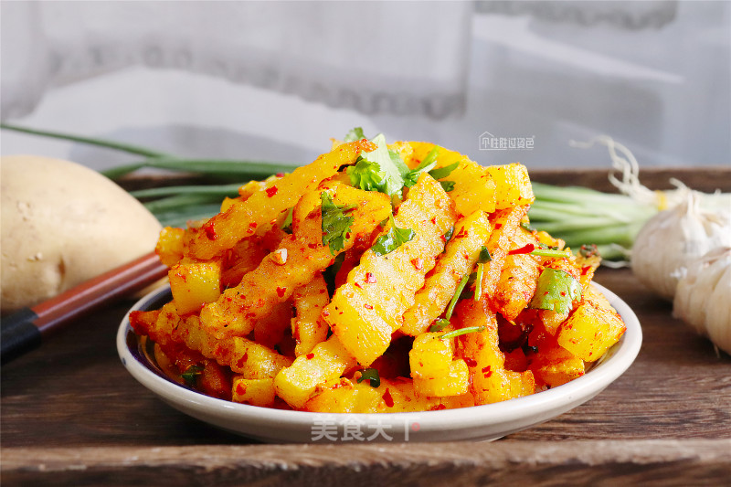
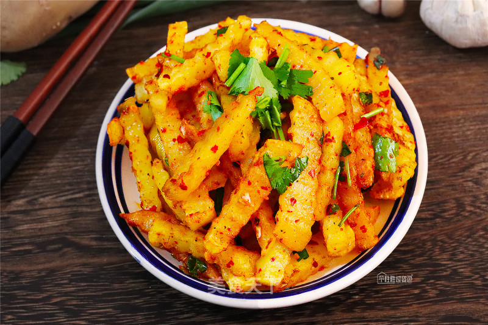
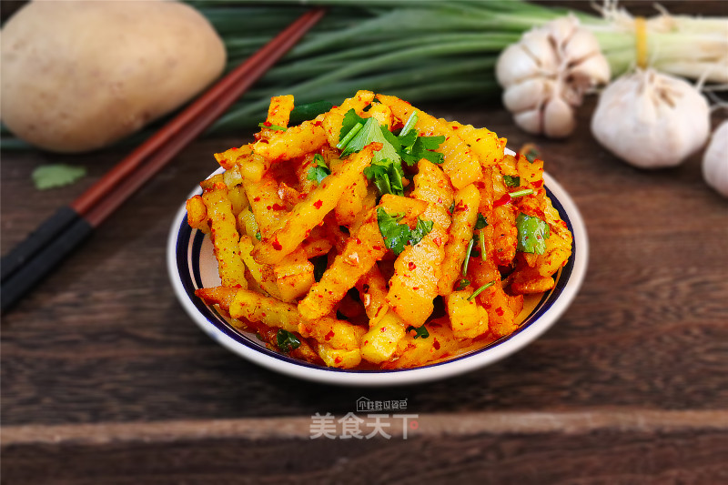

摆地摊火了，卖它特赚钱，香辣小吃人人爱
狼牙土豆在四川历史久，销路广，在校园周边、路边摊、夜市都能看到。离得老远就能闻到它诱人的香味儿，像有形的手一样牵着你来到摊前，掏5块钱买一碗，香喷喷热乎乎，一手捧碗一手拿牙签，边走边吃特惬意。 先让我们算个帐，一斤土豆也就2-3块钱，能做好几份狼牙土豆，这利润率可不低。而且做狼牙土豆的主要材料土豆，好保存，不容易坏，材料损耗少。它的制作方法也简单，材料处理起来不麻烦，5分钟做一锅，分出好几份，人流多的时候也能供应得上。不过要做得好吃，还是有些小窍门的，接下来一起看看做法吧。
1.将土豆削皮后切成厚片，用专门的波浪纹切刀把每一片分成条。我这刀在淘宝买的，几块钱一把还包邮，切口很锋利，切起来不费力，就是纹路比较浅。如果想切的花纹更美观，要选波浪幅度更大一些，刃口更长的刀。 切好的土豆条冲洗两遍，放入水中浸泡。这样可以避免淀粉氧化变色，也能冲洗掉表面多余的淀粉，一会儿油炸的时候不易粘锅。
2.锅中倒适量植物油，把油烧到7分热，将沥干水分的土豆条放入炸。锅里不用太多油，免得浪费。边炸边用漏勺搅动翻面。土豆很容易熟，如果喜欢吃脆的，就少炸一会儿；如果喜欢吃软糯的，就多炸一会儿。炸好后捞出，沥净余油。
3.炸好后的土豆条倒入拌菜盆中，加入盐、白砂糖、生抽、醋拌匀。再把花椒油、孜然粉、五香粉和一半的辣椒粉在锅中爆香，浇在土豆条上（也可以不爆香，直接把调味粉和花椒油洒在炸好的土豆条上拌匀）。
